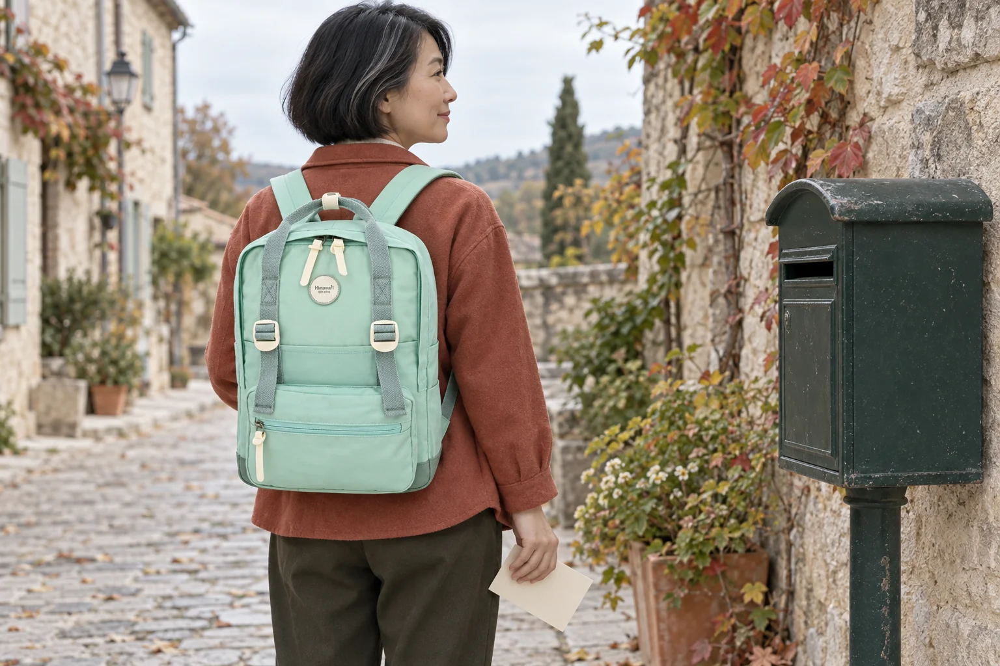

여행 엽서를 보내는 날: 백팩에서 꺼내 주소부터 다시 읽기

여행 중 고른 엽서에 짧은 인사를 적고 다시 백팩에 넣었습니다. 다음 장소로 떠나기 전에 보내려면 “썼다”와 “보낼 준비가 됐다”를 구분할 시간이 필요합니다. 가방에서 엽서를 꺼낸 뒤 그림 면보다 받는 사람 쪽을 먼저 확인해 보세요.
주소를 적을 때는 확인한 정보를 옆에 둡니다
받는 사람의 이름과 현재 주소를 확인한 뒤 한 장씩 적습니다. 기억만으로 건물 이름이나 숫자를 채우지 말고, 이미 확인한 주소와 엽서의 표기를 나란히 읽어보세요. 국내 발송이라면 우편번호도 확인합니다. 여러 장을 쓸 때는 같은 문장을 한꺼번에 옮기기보다 한 사람의 주소와 인사를 마무리하고 다음 장으로 넘어가면 짝이 바뀌었는지 살피기 쉽습니다.
주소와 우표 자리에 다른 표시가 겹치지 않는지 봅니다
우정사업본부의 국내 우편물 외부기재 안내는 우편번호를 정확히 적고 가려지거나 겹치지 않게 하도록 안내합니다. 엽서의 주소·우표 영역에는 장식이나 메모가 덮이지 않았는지 살펴보세요. 인쇄된 그림엽서라고 모두 우편요금이 포함된 것은 아니므로 표시를 확인하고, 필요한 요금과 접수 가능 여부는 보낼 엽서와 목적지에 맞춰 우체국에서 확인합니다.
완성한 엽서와 아직 쓸 엽서를 구분합니다
쓰기 전 엽서, 확인이 남은 엽서, 발송 준비를 마친 엽서를 같은 파일 안에서도 방향이나 구분 종이로 나눠 둡니다. 잉크가 마르기 전에 여러 장을 포개지 않고, 주소가 적힌 면은 이동 중 밖으로 드러나지 않게 합니다. 파일에 담아 백팩으로 옮길 때는 자신의 파일 크기와 가방 입구를 실제로 대조하세요. 사진 속 파일이 제품의 어느 수납칸에 맞는지는 확인한 내용이 아닙니다.
보낸 뒤에는 남은 엽서 수를 확인합니다
발송한 엽서를 가방에 다시 넣은 것으로 착각하지 않도록 남은 것과 오늘 보낸 것을 구분합니다. 주소 확인이 덜 된 엽서는 서둘러 보내기보다 별도로 남겨 다시 확인하세요. 여행 기록 사진에는 받는 사람의 주소를 그대로 담지 않는 편이 좋습니다. 사진의 No.1088M은 가로 28 × 세로 41.5 × 폭 14cm이며 민트 몸체와 크림색 지퍼 손잡이를 원본에 맞춰 표현했습니다. 가방은 이동 소지품이고 우편 서비스나 엽서용 보호 용기를 대신하지 않습니다.
참고·안내
- Himawari No.1088M 제품 정보
- 실제 Himawari No.1088M 민트 원본과 확인된 치수를 참조한 AI 착용 연출 사진입니다. 인물과 장소는 가상이며 실제 고객 후기나 실측 착용 기록이 아닙니다.
자주 묻는 질문
그림엽서는 우표 없이 보내도 되나요?
우편요금 납부 표시가 있는지 확인하세요. 그림엽서라는 이유만으로 요금이 포함되었다고 판단하지 말고 엽서와 발송 목적지에 맞는 안내를 확인합니다.
해외로 보내는 엽서도 같은 안내를 따르면 되나요?
이 글에서 연결한 기준은 국내 우편 안내입니다. 해외 발송은 목적지와 해당 우편 서비스의 최신 표기·요금·접수 안내를 따로 확인하세요.